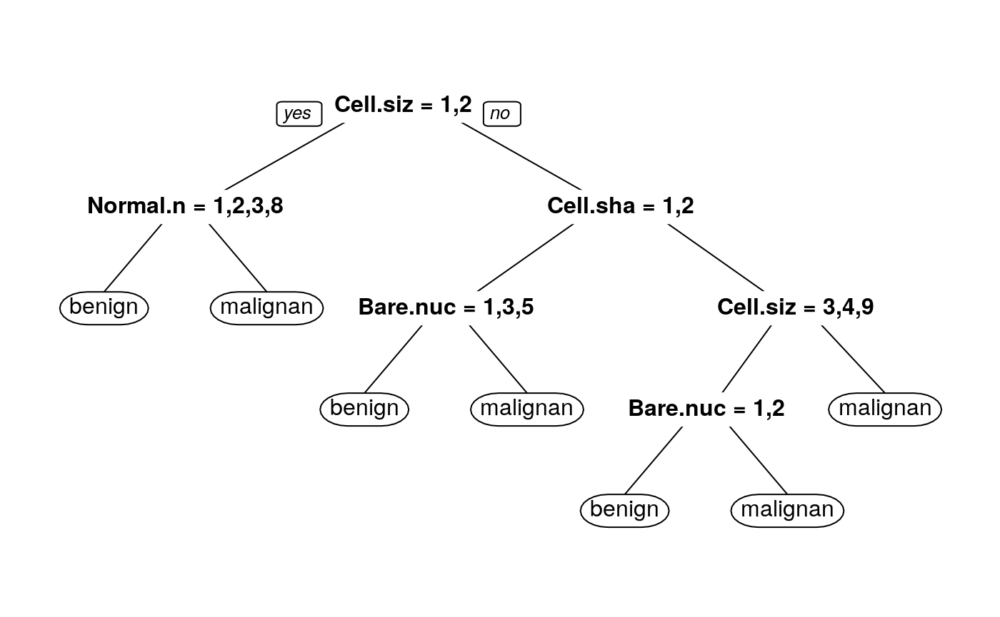

vignettes/tidyrules_vignette.Rmd
tidyrules_vignette.RmdAbstract
The packagetidyRules is meant to extract rules from model objects to a tibble/data.frame format. Currently this package supports C5.0, rpart and cubist models.
library("tidyrules")
library("dplyr")
library("C50")
library("pander")
# build model
c5_model <- C5.0(Species ~ ., data = iris, rules = TRUE)
# extract rules in a tidy tibble
tidy_rules <- tidyRules(c5_model)
# View tidy_rules
tidy_rules %>%
select(-c(rule_number,trial_number)) %>%
pandoc.table()##
## -----------------------------------------------------------------------
## id LHS RHS support confidence lift
## ---- ----------------------- ------------ --------- ------------ ------
## 1 Petal.Length <= 1.9 setosa 50 0.9808 2.9
##
## 2 Petal.Length > 1.9 & versicolor 48 0.96 2.9
## Petal.Length <= 4.9 &
## Petal.Width <= 1.7
##
## 3 Petal.Width > 1.7 virginica 46 0.9583 2.9
##
## 4 Petal.Length > 4.9 virginica 46 0.9375 2.8
## -----------------------------------------------------------------------Filter rules based on RHS or support or confidence or lift :
# Example 1, filter rules based on support
tidy_rules %>%
filter(support >= 48) %>%
select(LHS, RHS)## # A tibble: 2 x 2
## LHS RHS
## <chr> <chr>
## 1 Petal.Length <= 1.9 setosa
## 2 Petal.Length > 1.9 & Petal.Length <= 4.9 & Petal.Width <= 1.7 versicolor# Example 2, filter rules based on RHS
tidy_rules %>%
filter(RHS == "virginica") %>%
select(LHS, support, confidence, lift)## # A tibble: 2 x 4
## LHS support confidence lift
## <chr> <int> <dbl> <dbl>
## 1 Petal.Width > 1.7 46 0.958 2.9
## 2 Petal.Length > 4.9 46 0.938 2.8Use a tidyrule in a filter() function :
iris %>%
filter(eval(parse(text = tidy_rules[3,"LHS"]))) %>% # filter using a C5 rule
count(Species)## # A tibble: 2 x 2
## Species n
## <fct> <int>
## 1 versicolor 1
## 2 virginica 45tidyrules
C5.0
In this example we use attrition data from rsample package. This illustration shows how to extract rules from C5.0 model and applying filter() based on tidyrules.
# loading packages
library("tidyrules")
library("C50")
library("dplyr")
# attrition data load
data("attrition", package = "rsample")
attrition <- as_tibble(attrition)
glimpse(attrition)## Observations: 1,470
## Variables: 31
## $ Age <int> 41, 49, 37, 33, 27, 32, 59, 30, 38, 36,…
## $ Attrition <fct> Yes, No, Yes, No, No, No, No, No, No, N…
## $ BusinessTravel <fct> Travel_Rarely, Travel_Frequently, Trave…
## $ DailyRate <int> 1102, 279, 1373, 1392, 591, 1005, 1324,…
## $ Department <fct> Sales, Research_Development, Research_D…
## $ DistanceFromHome <int> 1, 8, 2, 3, 2, 2, 3, 24, 23, 27, 16, 15…
## $ Education <ord> College, Below_College, College, Master…
## $ EducationField <fct> Life_Sciences, Life_Sciences, Other, Li…
## $ EnvironmentSatisfaction <ord> Medium, High, Very_High, Very_High, Low…
## $ Gender <fct> Female, Male, Male, Female, Male, Male,…
## $ HourlyRate <int> 94, 61, 92, 56, 40, 79, 81, 67, 44, 94,…
## $ JobInvolvement <ord> High, Medium, Medium, High, High, High,…
## $ JobLevel <int> 2, 2, 1, 1, 1, 1, 1, 1, 3, 2, 1, 2, 1, …
## $ JobRole <fct> Sales_Executive, Research_Scientist, La…
## $ JobSatisfaction <ord> Very_High, Medium, High, High, Medium, …
## $ MaritalStatus <fct> Single, Married, Single, Married, Marri…
## $ MonthlyIncome <int> 5993, 5130, 2090, 2909, 3468, 3068, 267…
## $ MonthlyRate <int> 19479, 24907, 2396, 23159, 16632, 11864…
## $ NumCompaniesWorked <int> 8, 1, 6, 1, 9, 0, 4, 1, 0, 6, 0, 0, 1, …
## $ OverTime <fct> Yes, No, Yes, Yes, No, No, Yes, No, No,…
## $ PercentSalaryHike <int> 11, 23, 15, 11, 12, 13, 20, 22, 21, 13,…
## $ PerformanceRating <ord> Excellent, Outstanding, Excellent, Exce…
## $ RelationshipSatisfaction <ord> Low, Very_High, Medium, High, Very_High…
## $ StockOptionLevel <int> 0, 1, 0, 0, 1, 0, 3, 1, 0, 2, 1, 0, 1, …
## $ TotalWorkingYears <int> 8, 10, 7, 8, 6, 8, 12, 1, 10, 17, 6, 10…
## $ TrainingTimesLastYear <int> 0, 3, 3, 3, 3, 2, 3, 2, 2, 3, 5, 3, 1, …
## $ WorkLifeBalance <ord> Bad, Better, Better, Better, Better, Go…
## $ YearsAtCompany <int> 6, 10, 0, 8, 2, 7, 1, 1, 9, 7, 5, 9, 5,…
## $ YearsInCurrentRole <int> 4, 7, 0, 7, 2, 7, 0, 0, 7, 7, 4, 5, 2, …
## $ YearsSinceLastPromotion <int> 0, 1, 0, 3, 2, 3, 0, 0, 1, 7, 0, 0, 4, …
## $ YearsWithCurrManager <int> 5, 7, 0, 0, 2, 6, 0, 0, 8, 7, 3, 8, 3, …As you could see, there are 31 variables and 1470 observations are present this data-set. Here our aim is to predict Attrition using rest of the variables. Let us build a C5.0 model first.
# our C5 model
c5_att <- C5.0(Attrition ~ ., data = attrition, rules = TRUE)
# sample rules from C5
c5_att$output %>%
stringr::str_sub(start = 194L
, end = 578L) %>%
writeLines()##
## Rule 1: (521/30, lift 1.1)
## EnvironmentSatisfaction in [Medium-Very_High]
## JobInvolvement in [Medium-Very_High]
## OverTime = No
## TrainingTimesLastYear > 1
## WorkLifeBalance in [Better-Best]
## -> class No [0.941]
##
## Rule 2: (195/14, lift 1.1)
## JobRole = Research_Scientist
## OverTime = No
## -> class No [0.924]
##
## Rule 3: (1347/183, lift 1.0)
## TotalWorkingYears > 2
## -> class No [0.864]We get nice and human readable rules. Now problem with C5.0 summary is, you can only read and get a feel of how your predictions made based on rules. But here comes the hard part, imagine if you want to explore further about your data and you want to dig deeper, if you want to know rules which are throwing high lift and confidence, or you may be interested in rules which covers major sub-population. If in case your model is giving too many rules then that is the hardest part to go through each and every rules and identifying best rules out of the summary.
What if we have all the rules in a tidy table format so that we could easily use them on the data. Let’s get it done using tidyRules.
## # A tibble: 24 x 8
## id LHS RHS support confidence lift rule_number trial_number
## <int> <chr> <chr> <int> <dbl> <dbl> <int> <int>
## 1 1 Environme… No 521 0.941 1.1 1 1
## 2 2 JobRole =… No 195 0.924 1.1 2 1
## 3 3 TotalWork… No 1347 0.864 1 3 1
## 4 4 JobLevel … Yes 16 0.944 5.9 4 1
## 5 5 DailyRate… Yes 13 0.933 5.8 5 1
## 6 6 Environme… Yes 9 0.909 5.6 6 1
## 7 7 Environme… Yes 9 0.909 5.6 7 1
## 8 8 JobRole =… Yes 6 0.875 5.4 8 1
## 9 9 JobRole %… Yes 14 0.875 5.4 9 1
## 10 10 Departmen… Yes 13 0.867 5.4 10 1
## # … with 14 more rowstidyRules important columns to notice :
LHS : Rules.RHS : Predicted Class.support : Number of observation covered by the rule.confidence : Prediction accuracy for respective class. (laplace correction is implemented by default)lift : The result of dividing the rule’s estimated accuracy by the relative frequency of the predicted class in the training set.Let’s have a look at first five rules
##
## -------------------------------------------------------------------
## LHS RHS
## ------------------------------------------------------------- -----
## EnvironmentSatisfaction %in% c('Medium', 'High', No
## 'Very_High') & JobInvolvement %in% c('Medium', 'High',
## 'Very_High') & OverTime == 'No' & TrainingTimesLastYear > 1
## & WorkLifeBalance %in% c('Better', 'Best')
##
## JobRole == 'Research_Scientist' & OverTime == 'No' No
##
## TotalWorkingYears > 2 No
##
## JobLevel <= 1 & MonthlyIncome <= 2468 & OverTime == 'Yes' & Yes
## TotalWorkingYears > 2 & YearsAtCompany <= 3
##
## DailyRate <= 722 & JobLevel <= 1 & MonthlyIncome <= 2468 & Yes
## OverTime == 'Yes' & TotalWorkingYears > 2
## -------------------------------------------------------------------Now, all the rules are in tibble (a tidy form of dataframe) format. Let us look at rules which favors only Attrition is equal to “No” and arrange by support.
## # A tibble: 3 x 8
## id LHS RHS support confidence lift rule_number trial_number
## <int> <chr> <chr> <int> <dbl> <dbl> <int> <int>
## 1 3 TotalWorki… No 1347 0.864 1 3 1
## 2 1 Environmen… No 521 0.941 1.1 1 1
## 3 2 JobRole ==… No 195 0.924 1.1 2 1filter() function.Let’s use a rule within a filter(). Say, one need to pick a rule which has largest support for predicted Attrition “Yes”.
# filter a rule with conditions
large_support_rule <- tr_att %>%
filter(RHS == "Yes") %>%
top_n(1, wt = support) %>%
pull(LHS)
# parseable rule
parseable_rule <- parse(text = large_support_rule)
# apply filter on data frame using parseable rule
attrition %>%
filter(eval(parseable_rule))## # A tibble: 57 x 31
## Age Attrition BusinessTravel DailyRate Department DistanceFromHome
## <int> <fct> <fct> <int> <fct> <int>
## 1 41 Yes Travel_Rarely 1102 Sales 1
## 2 46 No Travel_Freque… 1211 Sales 5
## 3 48 Yes Travel_Rarely 626 Research_… 1
## 4 50 No Travel_Rarely 989 Research_… 7
## 5 34 Yes Travel_Freque… 658 Research_… 7
## 6 31 Yes Travel_Rarely 249 Sales 6
## 7 31 Yes Travel_Rarely 542 Sales 20
## 8 41 Yes Travel_Rarely 1356 Sales 20
## 9 37 No Travel_Rarely 290 Research_… 21
## 10 52 No Non-Travel 771 Sales 2
## # … with 47 more rows, and 25 more variables: Education <ord>,
## # EducationField <fct>, EnvironmentSatisfaction <ord>, Gender <fct>,
## # HourlyRate <int>, JobInvolvement <ord>, JobLevel <int>, JobRole <fct>,
## # JobSatisfaction <ord>, MaritalStatus <fct>, MonthlyIncome <int>,
## # MonthlyRate <int>, NumCompaniesWorked <int>, OverTime <fct>,
## # PercentSalaryHike <int>, PerformanceRating <ord>,
## # RelationshipSatisfaction <ord>, StockOptionLevel <int>,
## # TotalWorkingYears <int>, TrainingTimesLastYear <int>,
## # WorkLifeBalance <ord>, YearsAtCompany <int>, YearsInCurrentRole <int>,
## # YearsSinceLastPromotion <int>, YearsWithCurrManager <int>rpart
In this example we will be using BreastCancer data from mlbench package.
library("tidyrules")
library("dplyr")
library("rpart")
# BreastCancer
data(BreastCancer, package = "mlbench")
bc_train <- BreastCancer %>%
select(-Id) %>%
mutate_if(is.ordered, function(x) x <- factor(x,ordered = F))
rpart_bc <- rpart(Class ~ ., data = bc_train)NOTE : Do not forget to convert all ordered features to factor type before training the model.
One could visualize rpart decision tree using prp function from rpart.plot package.

The above tree visual is really nice to get a hang of how decision tree is splitting at each node. But, if you want to pick a terminal node it is really boring and hard since one has to enter the respective filter manually (imagine a situation if you have hundreds of features and a huge tree!!). To get-ride of this problem one could use tidyrules to make life easier.
Let’s extract rules from rpart object and use those rules further more to extract terminal nodes.
## # A tibble: 7 x 6
## id LHS RHS support confidence lift
## <int> <chr> <chr> <int> <dbl> <dbl>
## 1 1 Cell.size %in% c('1', '2') & Norma… benign 421 0.986 1.50
## 2 2 Cell.size %in% c('1', '2') & Norma… malig… 8 0.8 2.32
## 3 3 Cell.size %in% c('3', '4', '5', '6… benign 16 0.944 1.44
## 4 4 Cell.size %in% c('3', '4', '5', '6… malig… 7 0.667 1.93
## 5 5 Cell.size %in% c('3', '4', '5', '6… benign 15 0.647 0.988
## 6 6 Cell.size %in% c('3', '4', '5', '6… malig… 61 0.841 2.44
## 7 7 Cell.size %in% c('3', '4', '5', '6… malig… 171 0.971 2.82# filter the data using a rule
bc_train %>%
filter(eval(parse(text = rules_bc[5,"LHS"]))) %>%
as_tibble()## # A tibble: 15 x 10
## Cl.thickness Cell.size Cell.shape Marg.adhesion Epith.c.size Bare.nuclei
## <fct> <fct> <fct> <fct> <fct> <fct>
## 1 7 4 6 4 6 1
## 2 6 3 4 1 5 2
## 3 1 3 3 2 2 1
## 4 8 3 3 1 2 2
## 5 8 4 6 3 3 1
## 6 3 4 4 10 5 1
## 7 5 3 4 1 4 1
## 8 5 3 3 2 3 1
## 9 5 3 3 1 2 1
## 10 4 3 3 1 2 1
## 11 5 3 6 1 2 1
## 12 10 9 7 3 4 2
## 13 5 4 6 8 4 1
## 14 6 3 3 3 3 2
## 15 5 4 5 1 8 1
## # … with 4 more variables: Bl.cromatin <fct>, Normal.nucleoli <fct>,
## # Mitoses <fct>, Class <fct>Cubist
In this example, rules extraction from a regression model (a cubist model) has been illustrated below. We will be using AmesHousing dataset for the example.
library("tidyrules")
library("dplyr")
library("Cubist")
# ames housing data set
ames <- AmesHousing::make_ames()
cubist_ames <- cubist(x = ames[, setdiff(colnames(ames), c("Sale_Price"))],
y = log10(ames[["Sale_Price"]]),
committees = 3
)
# rule extract
rules_ames <- tidyRules(cubist_ames)
rules_ames## # A tibble: 43 x 9
## id LHS RHS support mean min max error committee
## <int> <chr> <chr> <int> <dbl> <dbl> <dbl> <dbl> <int>
## 1 1 Overall_Qu… (-202.4965… 23 4.74 4.11 4.98 0.134 1
## 2 2 Overall_Qu… (-194.8591… 125 4.94 4.54 5.17 0.0679 1
## 3 3 Overall_Qu… (12.372018… 99 5.04 4.75 5.29 0.0649 1
## 4 4 Overall_Qu… (-47.97341… 672 5.14 4.82 5.59 0.0338 1
## 5 5 MS_SubClas… (-53.11988… 358 5.17 4.79 5.38 0.0309 1
## 6 6 MS_SubClas… (1.127729)… 85 5.17 4.80 5.54 0.0632 1
## 7 7 MS_SubClas… (10.129513… 287 5.18 4.78 5.49 0.0388 1
## 8 8 MS_SubClas… (5.675156)… 748 5.21 4.80 5.59 0.0315 1
## 9 9 MS_SubClas… (1.563904)… 26 5.23 5 5.48 0.0748 1
## 10 10 Overall_Qu… (1.075936)… 71 5.26 4.96 5.58 0.0681 1
## # … with 33 more rowsNotice that, for cubist rules we have mean, min, max and error instead of confidence and lift. Here mean, min and max are calculated based on predicted values with respect to a rule.